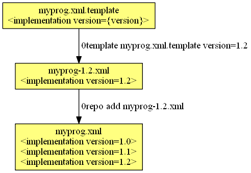

Name: 0template
Maintainer: Thomas Leonard
License: GNU Lesser General Public License
Source: Git repository
Zero Install feed: http://0install.net/tools/0template.xml
0template creates the XML for one version of a program from a template. The diagram below shows how it fits into the overall publishing process:

That is, each time you want to add a new release of a program to your master XML feed, you first use 0template to generate the XML for the new release. Once you're happy with it, merge it into the master feed with 0repo.
0template is mostly useful for publishing existing binary or source archives. If you are making releases of your own software from Git, consider using 0release instead.
Contents:
Installation
To get it:
$ 0install add 0template http://0install.net/tools/0template.xml
Creating the template
To start, run it with a non-existent file and it will offer to create it:
$ 0template myprog.xml.template
'myprog.xml.template' does not exist; creating new template.
Does your program need to be compiled before it can be used?
1) Generate a source template (e.g. for compiling C source code)
2) Generate a binary template (e.g. for a pre-compiled binary or script)
> 2
Writing myprog.xml.template
Then edit the generated myprog.xml.template to taste. A minimal example would be:
<?xml version="1.0"?>
<interface xmlns="http://zero-install.sourceforge.net/2004/injector/interface">
<name>myprog</name>
<summary>does useful stuff</summary>
<group>
<command name="run" path="myprog"/>
<implementation version="{version}">
<manifest-digest/>
<archive href="http://example.com/downloads/myprog-{version}.zip"/>
</implementation>
</group>
</interface>
You would typically want to add any dependencies here too. See the feed specification for details.
Note: You can also use 0template to create a local feed to run a Git checkout, rather than an archive on the web. In that case, just don't use the .template extension, and it will generate a feed rather than a template.
Using the template
To generate the XML for a particular version, run 0template on it and provide the template parameters (version in this example), e.g.
$ 0template myprog.xml.template version=1.0
Downloading http://example.com/downloads/myprog-1.0.zip to ./myprog-1.0.zip
Writing myprog-1.0.xml
You now have a feed with the appropriate details filled in:
<?xml version="1.0"?>
<interface xmlns="http://zero-install.sourceforge.net/2004/injector/interface">
<name>myprog</name>
<summary>does useful stuff</summary>
<group>
<command name="run" path="myprog"/>
<implementation id="sha1new=67ba178ed33b292efa5ab364d01a8fc13fe9eba3" version="1.0">
<manifest-digest sha256new="FBXDJXLMHAPCRNZ5XOQTVYQHD6VP7CZAZ2UKCCV5UYE27C752GIQ"/>
<archive extract="myprog-1.0" href="http://example.com/downloads/myprog-1.0.zip" size="352"/>
</implementation>
</group>
</interface>
Specifically, 0template fills in these values:
- All
{...}text is expanded with the values you provided on the command-line. - The archive is downloaded to the directory containing the feed, if it's not already there.
- The
sizeattribute is set to the size of the archive. - The
extractattribute is set to the single top-level directory in the archive, if it has one. - The
idis set to the sha1new digest of the archive. - Any empty attributes of
manifest-digestare filled in with the calculated digests. If there are no attributes, asha256newdigest is added.
You can now test this feed using e.g.
$ 0launch myprog-1.0.xml
Or, for source feeds:
$ 0compile autocompile myprog-1.0.xml
Once you are happy with it, you can add it to the master feed (which contains all versions) using 0repo. e.g.
$ 0repo add myprog-1.2.xml